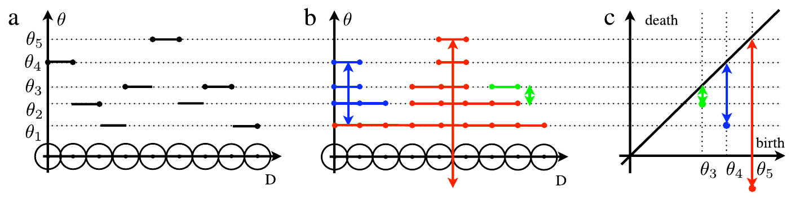
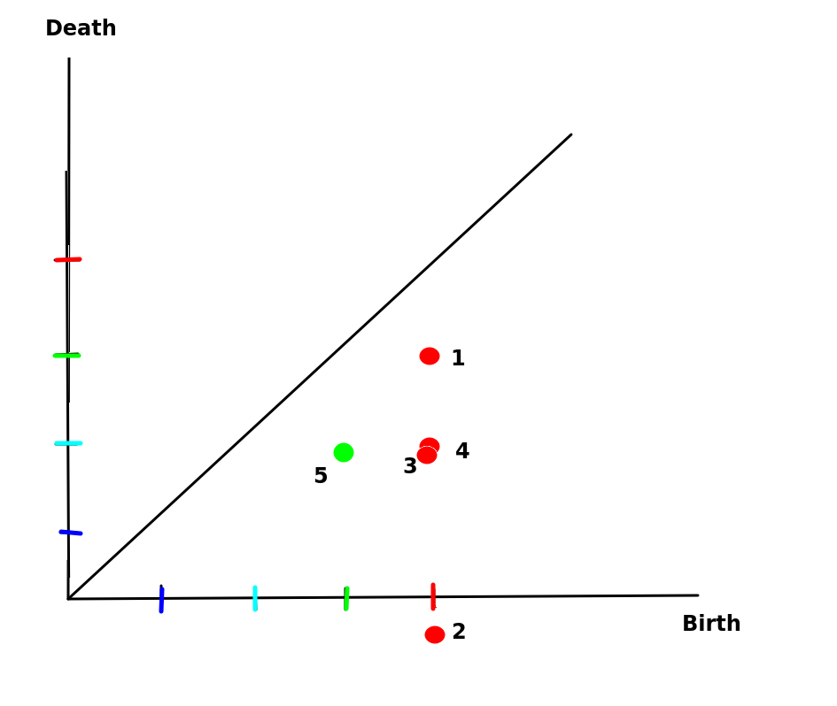

CLASE 4 - GEOFÍSICA DE MEDIOS GRANULARES
CADENAS DE FUERZAS
Y REDES DE CONTACTO
THOMAS GALLOT,
CAMILA SEDOFEITO
Instituto de Física,
Facultad de Ciencias,
Universidad de la República
Plan de la clase
- Distribución heterogénea de fuerzas
- Cadenas de fuerza: observación experimental
- Redes de contacto
- Tensor de esfuerzos de Cauchy
- Círculo de Mohr
- Cadena de Nesterenko (introducción)
Distribución heterogénea de fuerzas

Cilindro de papel carbónico: la fuerza sobre cada grano se mide por la impresión dejada.
En un medio granular, las fuerzas de contacto no se distribuyen uniformemente.
- Muchos contactos con fuerzas menores que el promedio
- Cola exponencial para fuerzas grandes: $P(f) \propto e^{-\beta f/\langle f\rangle}$
- Estudios recientes sugieren $P(f) \propto \exp[-\beta(f/\langle f\rangle)^2]$ para $f \gt \langle f\rangle$
▼ Derivación (Liu et al., Science 1995)
Experimento: papel carbónico (Liu et al., 1995)
Dispositivo experimental:
- Contenedor cilíndrico (90 mm diámetro, 75 mm alto)
- Esferas de vidrio Pyrex ($r = 3{,}5$ mm) en fluido de índice adaptado (glicerol + agua)
- Papel carbónico en la base del contenedor
- Fuerza aplicada: $F = 310$ N sobre la superficie superior
- El área de la marca $\propto$ fuerza ejercida por cada grano
Ajuste: $\beta = 0{,}64\;\text{N}^{-1}$ (total), $\beta = 1{,}02\;\text{N}^{-1}$ (centro)
Esquema del experimento
Liu, Nagel, Schecter, Coppersmith, Majumdar, Narayan & Witten, Science 269, 513 (1995)
Modelo q: ecuación estocástica
Red regular: cada grano en la capa $D$, sitio $i$, soporta fuerza $f(D,i)$. Transmite fracciones aleatorias $q_{ji}$ a $N$ granos de la capa inferior.
Ecuación estocástica:
\[ f(D+1,\,j) = 1 + \sum_{i} q_{ji}(D)\;f(D,i) \]Vínculo: todo el peso se transmite
Distribución de las fracciones:
para alguna función $f(x)$. El caso "uniforme" corresponde a $f(q_{ij}) = \text{cte}$.
Aproximación de campo medio:
- Las fuerzas $f$ en sitios vecinos de una misma capa están correlacionados
- Campo medio: ignorar las correlaciones entre vecinos
- Para $f(q) = \text{cte}$, el campo medio es exacto para todo $N$
Liu et al., Science 269, 513 (1995), Eqs. 2–4
Solución exacta: distribución $P(\tilde{f})$
Para la distribución uniforme $f(q) = \text{cte}$, con fuerza normalizada $\tilde{f} = f/\langle f \rangle$, la solución exacta del campo medio cuando $D \to \infty$ es:
Esta es una distribución Gamma de parámetros $(N, N)$.
| Red | $N$ | $P(\tilde{f})$ |
|---|---|---|
| Triangular 2D | 2 | $4\tilde{f}\,e^{-2\tilde{f}}$ |
| FCC 3D | 3 | $\frac{27}{2}\tilde{f}^2\,e^{-3\tilde{f}}$ |
| Genérico | $N$ | $\frac{N^N}{(N-1)!}\,\tilde{f}^{N-1}\,e^{-N\tilde{f}}$ |
Verificación: $\int_0^\infty P(\tilde{f})\,d\tilde{f} = 1$ y $\int_0^\infty \tilde{f}\,P(\tilde{f})\,d\tilde{f} = 1$ (normalización).
Pasos de la derivación:
- Escribir $f(D+1,j) = 1 + \sum_i q_{ji}\,f(D,i)$
- En campo medio, cada $q_{ji}\,f(D,i)$ es una variable aleatoria independiente
- $P(\tilde{f})$ satisface una ecuación de convolución iterada
- Para $f(q)=\text{cte}$, la transformada de Laplace se factoriza: $\hat{P}(s) \propto \left(\frac{N}{s+N}\right)^N$
- La anti-transformada da la distribución Gamma
- $\tilde{f} \ll 1$: $P(\tilde{f}) \sim \tilde{f}^{\,N-1}$ (plateau o cero según $N$)
- $\tilde{f} \gg 1$: $P(\tilde{f}) \sim e^{-N\tilde{f}}$ (cola exponencial)
- Máximo en $\tilde{f} = (N-1)/N$ (cerca de $\langle \tilde{f} \rangle = 1$)
Liu et al., Science 269, 513 (1995), Eq. 5 & Fig. 3
Modelo q de Liu et al.
Modelo escalar en red: cada grano distribuye su peso a los granos inferiores con fracciones aleatorias \(q\) y \(1-q\).
Red triangular: peso transmitido con fracciones \(q\) y \(1-q\)
Para \(q\) uniforme en \([0,1]\), el resultado es:
donde \(z\) = numero de contactos inferiores.
- Reproduce la cola exponencial observada experimentalmente
- El prefactor \(f^{z-1}\) controla el comportamiento a fuerzas bajas
- El teorema central del límite explica la universalidad de la cola exponencial
Andreotti et al., Granular Media (2013), §3.2.2, p.73–76
▼ Práctico asociado
Práctico: Modelo q de Liu et al.
Objetivo: explorar analítica y numéricamente el modelo q para comprender el origen de la distribución exponencial de fuerzas en medios granulares.
- Campo medio: derivar la ecuación de convolución para $P(f)$
- Transformada de Laplace: resolver la ecuación para $q$ uniforme
- Distribución Gamma: obtener $P(\tilde{f}) = \frac{N^N}{(N-1)!}\tilde{f}^{N-1}e^{-N\tilde{f}}$
- Casos particulares: calcular $P(\tilde{f})$ para $N=2$ y $N=3$
- Simulación numérica: implementar el modelo q en Python, comparar con la solución analítica
- Más allá del campo medio: discutir los efectos de correlaciones
- Conexión entre el modelo q y el teorema central del límite
- Universalidad de la cola exponencial
- Rol de la coordinación $N$ en la forma de $P(f)$
- Comparación teoría / simulación / experimento
Resultado principal a demostrar:
\[ P(\tilde{f}) = \frac{N^N}{(N-1)!}\;\tilde{f}^{\,N-1}\;e^{-N\tilde{f}} \]Ver: Practico_Modelo_q_Liu.pdf en Actividades
Basado en Liu et al., Science 269, 513 (1995)
Cadenas de fuerza: observación experimental
Experimento de Dantu (1967): cilindros de vidrio entre polarizadores cruzados, comprimidos por un pistón.
- La fuerza no se distribuye uniformemente
- Se concentra en cadenas de fuerza
- Nuevos contactos crean nuevos caminos
- La rigidez aumenta con la carga
- Comportamiento muy no-lineal
▼ Cuantificación de la distribución de fuerzas
Distribución de fuerzas: cuantificación
Forma universal de $P(f/\langle f\rangle)$:
Dos regímenes separados por $f = \langle f \rangle$:
- $f < \langle f\rangle$: power-law $P \sim (f/\langle f\rangle)^\alpha$
- $f > \langle f\rangle$: cola exponencial $P \sim e^{-\beta f/\langle f\rangle}$
Datos cuantitativos (experimentos + simulaciones):
| Magnitud | Valor típico |
|---|---|
| $f_{\max}/f_{\min}$ | $\sim 10^3 - 10^4$ |
| Contactos con $f > \langle f\rangle$ | $\sim 30\%$ |
| Carga soportada por $f > \langle f\rangle$ | $\sim 70\%$ |
| Exponente $\beta$ (cola) | $1.0 - 1.5$ |
Mueth, Jaeger & Nagel, Phys. Rev. E 57, 3164 (1998); Majmudar & Behringer, Nature 435, 1079 (2005)
Cadenas de fuerza: propiedades
Las cadenas de fuerza son caminos preferenciales de transmisión de esfuerzos a través del medio granular.
- Las cadenas fuertes se alinean con la dirección de la carga principal
- La red de contactos cambia con cada reorganización
- El desorden geométrico genera heterogeneidad en las fuerzas

Discos fotoelásticos en celda biaxial (Kramár et al., Physica D, 2014)
Redes de contacto
La estructura de contactos puede representarse como un grafo:
- Nodos: centros de los granos
- Lados: fuerzas de contacto (magnitud o componentes)
- Extensión a simplices 2D (triángulos)
- Filtrado por umbral de fuerza
Herramientas de topología algebraica:
- Componentes conectados (clusters)
- Lazos (loops = agujeros)
- Números de Betti $\beta_0, \beta_1$
- Análisis de persistencia

Kramár et al., Physica D (2014)
(a) Red coloreada por fuerza,
(b) simplices,
(c-d) filtrado,
(e-h) componentes conectados a diferentes umbrales.
▼ Complejos simpliciales y análisis de persistencia
Complejos simpliciales y números de Betti
Jerarquía de simplices:
| Simplice | Dimensión | Interpretación física |
|---|---|---|
| 0-simplice | punto | Grano individual |
| 1-simplice | arista | Contacto entre dos granos |
| 2-simplice | triángulo | Trío de granos mutuamente en contacto |
Un complejo simplicial $\mathcal{K}$ se construye a partir del grafo de contactos filtrado por un umbral de fuerza $\theta$: solo se incluyen contactos con $f \geq \theta$.
- $\beta_0$ = componentes conexas (clusters de granos conectados)
- $\beta_1$ = lazos independientes (agujeros en la red)
Kramár et al., Physica D (2014): (b) complejos simpliciales construidos a partir del grafo de contactos.
Análisis de persistencia (homología persistente)
Idea: variar el umbral $\theta$ de fuerza y rastrear el nacimiento y la muerte de las características topológicas ($\beta_0$, $\beta_1$).
- birth($b$): valor de $\theta$ donde aparece una componente conexa o un lazo
- death($d$): valor de $\theta$ donde desaparece (se fusiona o se llena)
- Persistencia: $|d - b|$ — cuanto mayor, más robusta es la estructura

Barcode: cada barra horizontal = vida de una componente topológica (Kramár et al., 2014)

Diagrama de persistencia: puntos lejos de la diagonal = cadenas robustas
Tensor de esfuerzos de Cauchy
- $\boldsymbol{T}^{(\boldsymbol{n})} = \displaystyle\lim_{\Delta s\to 0}\frac{\Delta\boldsymbol{F}}{\Delta s} = \frac{d\boldsymbol{F}}{ds}$ es el vector de tensión (principio de Cauchy).
- Componentes: $\sigma = \dfrac{F^n}{A}$ (normal) $\tau = \dfrac{F^t}{A}$ (tangencial)
- $-\boldsymbol{T}^{(\boldsymbol{n})} = \boldsymbol{T}^{(-\boldsymbol{n})}$ (lema de Cauchy, 3ra ley de Newton).
- Para cada punto existe un tensor $[\sigma]$ tal que:
$\boldsymbol{T}^{(\boldsymbol{n})} = [\sigma]\boldsymbol{n} \to T_j^{(\boldsymbol{n})} = \sigma_{ij}n_i$
Equilibrio: $\sigma_{ij} = \sigma_{ji}$ (tensor simétrico)


▼ Derivación completa del lema de Cauchy
Principio de Cauchy y vector de tracción
Postulado de Cauchy (1823):
En cada punto de un cuerpo continuo y para cada superficie orientada con normal $\boldsymbol{n}$, existe un vector de tracción:
Componentes:
- Componente normal: $\sigma = \boldsymbol{T}^{(\boldsymbol{n})}\cdot\boldsymbol{n} = F^n/A$
- Componente tangencial: $\tau = |\boldsymbol{T}^{(\boldsymbol{n})} - \sigma\,\boldsymbol{n}| = F^t/A$
Los vectores de tracción sobre caras opuestas de una superficie son iguales y opuestos (3ra ley de Newton aplicada a una "rodaja" infinitamente delgada del continuo).
Elemento de superficie $ds$ con normal $\boldsymbol{n}$ y vector de tracción $\boldsymbol{T}^{(\boldsymbol{n})}$
Tetraedro de Cauchy: balance de fuerzas

Tetraedro de Cauchy con cara oblicua de normal $\boldsymbol{n}$
2da ley de Newton sobre el tetraedro (4 caras):
Relación geométrica entre las áreas:
Paso al límite: cuando el tetraedro se contrae ($dm \to 0$, las fuerzas de volumen son $\propto dV$ mientras que las de superficie son $\propto dA$), el término inercial desaparece:
Derivación: $\boldsymbol{T}^{(\boldsymbol{n})} = [\sigma]\,\boldsymbol{n}$
Descomposición de cada $\boldsymbol{T}^{(\boldsymbol{e}_i)}$ en componentes:
Sustituyendo en $\boldsymbol{T}^{(\boldsymbol{n})} = \sum_i \boldsymbol{T}^{(\boldsymbol{e}_i)}n_i$:
Tensiones normal y tangencial sobre el plano de normal $\boldsymbol{n}$:
- $\sigma_n = \boldsymbol{T}\cdot\boldsymbol{n} = \sigma_{ij}\,n_i\,n_j$
- $\tau_n = |\boldsymbol{T} - \sigma_n\boldsymbol{n}| = \sqrt{|\boldsymbol{T}|^2 - \sigma_n^2}$
Componentes $\sigma_{ij}$: el primer índice indica la cara, el segundo la dirección de la fuerza.
Ecuaciones de equilibrio
Equilibrio de traslación (volumen arbitrario $V$ con superficie $S$):
Usando $T_j = \sigma_{ij}n_i$ y el teorema de Gauss ($\oint_S \sigma_{ij}n_i\,ds = \int_V \sigma_{ij,i}\,dV$):
Equilibrio de rotación (momentos respecto a un punto):
$\oint_S \boldsymbol{r}\times\boldsymbol{T}\,ds + \int_V \boldsymbol{r}\times\boldsymbol{F}\,dV = \boldsymbol{0}$
Esto implica:
En 3D: 6 componentes independientes (no 9).
En 2D: 3 componentes ($\sigma_{xx}$, $\sigma_{yy}$, $\sigma_{xy}$).
Tensor principal:
$[\sigma]$ se diagonaliza en ejes principales con autovalores $\sigma_1, \sigma_2, \sigma_3$.
Invariantes:
$I_1 = \text{Tr}([\sigma])$ (presión)
$I_2 = \sigma_1\sigma_2 + \sigma_2\sigma_3 + \sigma_3\sigma_1$
$I_3 = \det([\sigma])$
Tensor de deformacion
Campo de desplazamientos:
Tensor de deformacion (pequenas deformaciones):
Significado fisico de las componentes:
- Diagonal \(\varepsilon_{ii}\): extensiones / compresiones
- Fuera de diagonal \(\varepsilon_{ij}\) (\(i \neq j\)): cizallamiento
- Traza: cambio de volumen relativo: \(\text{tr}(\varepsilon) = \Delta V / V\)
En notacion matricial (2D):
\[ [\varepsilon] = \begin{bmatrix} \varepsilon_{xx} & \varepsilon_{xy} \\ \varepsilon_{yx} & \varepsilon_{yy} \end{bmatrix} \]Andreotti et al., Granular Media (2013), Box p.79–80
Círculo de Mohr (2D)
En el sistema principal $(1,2)$ con $\sigma_1 > \sigma_2$:
Tensión normal al plano:
$\sigma_n = \sigma_1\cos^2\theta + \sigma_2\sin^2\theta$
Tensión tangencial al plano:
Estas son las ecuaciones paramétricas de un círculo de radio $\frac{\sigma_1-\sigma_2}{2}$ con centro en $\left(\frac{\sigma_1+\sigma_2}{2},\,0\right)$.

En $(x,y)$:
$[\sigma] = \begin{bmatrix} \sigma_{xx} & \sigma_{xy} \\ \sigma_{yx} & \sigma_{yy}\end{bmatrix}$
En $(1,2)$, $[\sigma]$ es diagonal:
$[\sigma] = \begin{bmatrix} \sigma_1 & 0 \\ 0 & \sigma_2\end{bmatrix}$
Círculo de Mohr: construcción gráfica

Lectura del diagrama:
- El eje horizontal es $\sigma_n$ (tensión normal)
- El eje vertical es $\tau_n$ (tensión tangencial)
- Los esfuerzos principales $\sigma_1, \sigma_2$ están sobre el eje $\sigma_n$
- $\tau_{\max} = \frac{\sigma_1 - \sigma_2}{2}$ (en $\theta = \pi/4$)
Ejemplo (tensor simétrico):
$\boldsymbol{n} = (1,0)$: $\sigma_n = \sigma_{xx}$, $\tau_n = \sigma_{xy}$
$\boldsymbol{n} = (0,1)$: $\sigma_n = \sigma_{yy}$, $\tau_n = -\sigma_{xy}$
De lo micro a lo macro: tensor desde contactos
Para $N$ granos con posiciones $\boldsymbol{r}_i$ y fuerzas de contacto $\boldsymbol{f}_{ij}$, se suaviza con una función $\phi(\boldsymbol{R})$ para obtener cantidades macroscópicas.
Aplicando conservación de cantidad de movimiento, se obtiene la fórmula de Born-Huang (1947):
donde $\boldsymbol{b}_{ij}$ son los "branch vectors" de los contactos.
- Primer término: contribución de las fuerzas de contacto
- Segundo término: contribución cinética (despreciable en régimen cuasi-estático)

Claudin, Cap. 14, en Mehta, Granular Physics, Cambridge U. Press (2007)
Cadena de Nesterenko
Cadena unidimensional de esferas en contacto: modelo fundamental para la propagación de ondas en medios granulares.
donde $\delta$ es la deformación y $k$ depende de los módulos elásticos y radios.
Consecuencias:
- Sin precompresión: no hay velocidad del sonido lineal ($c = 0$)
- Propagación de ondas solitarias (solitones de Nesterenko)
- Ancho del solitón: $\sim 5$ diámetros de esfera (independiente de amplitud)
- Velocidad: $V_s \propto F_m^{1/6}$ (depende de la amplitud)
Cadena 1D de esferas de Hertz
Ecuación de movimiento (grano $n$):
$m\ddot{u}_n = k\left[\delta_0 + u_{n-1} - u_n\right]_+^{3/2} - k\left[\delta_0 + u_n - u_{n+1}\right]_+^{3/2}$
donde $[x]_+ = \max(x,0)$ (no hay tracción entre esferas).
Referencia: Nesterenko, Dynamics of Heterogeneous Materials, Springer (2001).
Solitón de Nesterenko
Sin precompresión ($\delta_0 = 0$): el medio es "sónico vacío" (no propaga ondas lineales).
Nesterenko (1983) demostró que la solución exacta para una cadena infinita es un pulso solitario con perfil:
Propiedades:
- Ancho fijo: $\approx 5a$ (5 diámetros)
- $V_s \propto F_m^{1/6}$: ondas más intensas viajan más rápido
- Al impactar un borde libre: la energía se refleja como un tren de solitones más pequeños
Con precompresión ($\delta_0 > 0$): transición hacia comportamiento lineal con velocidad del sonido $c \propto \delta_0^{1/4}$.
Aplicaciones:
- Ensayos no destructivos (NDE)
- Protección contra impactos
- Filtros acústicos no lineales
- Detección de defectos en estructuras
Longitud de onda vs. amplitud:
A diferencia de las ondas lineales, el solitón granular tiene ancho independiente de la amplitud, pero velocidad dependiente de la amplitud.
Veremos más detalles en clases posteriores (Clase 6).
Próxima clase
Clase 5: Distribución de fuerzas: Mohr-Coulomb y fotoelasticidad
- Criterio de Mohr-Coulomb
- Envolvente de falla
- Fotoelasticidad: principio y aplicación
- Discos fotoelásticos
- Experimentos 4, 5 y 6
Bibliografía: Andreotti et al., Granular Media -- Cap. 3
Nesterenko, Dynamics of Heterogeneous Materials -- Cap. 1